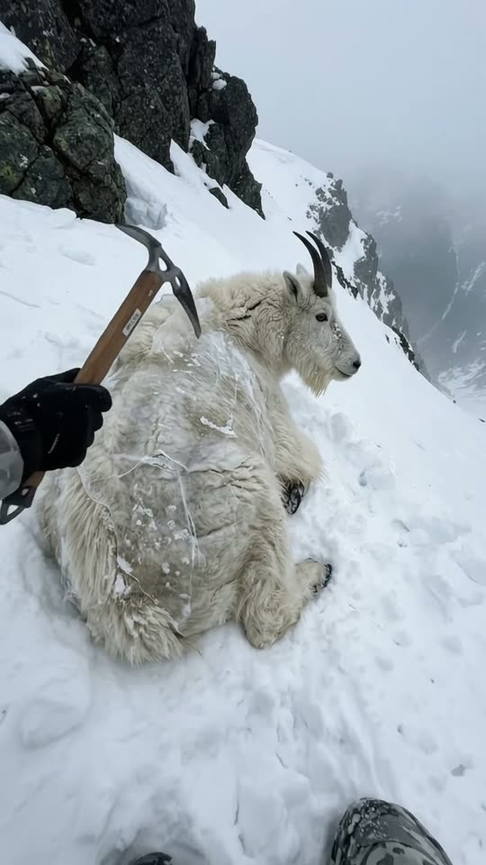
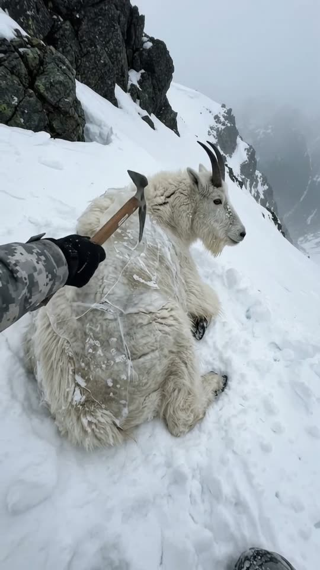
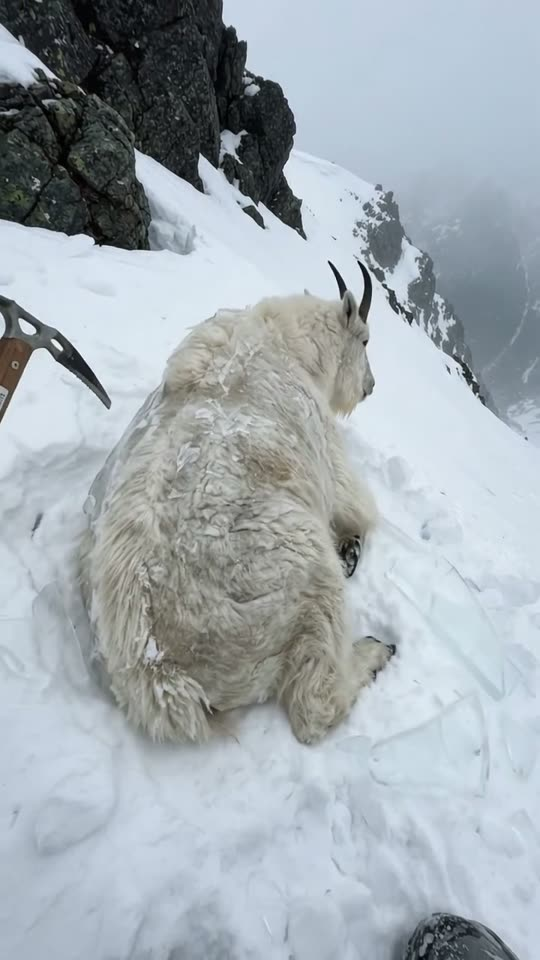
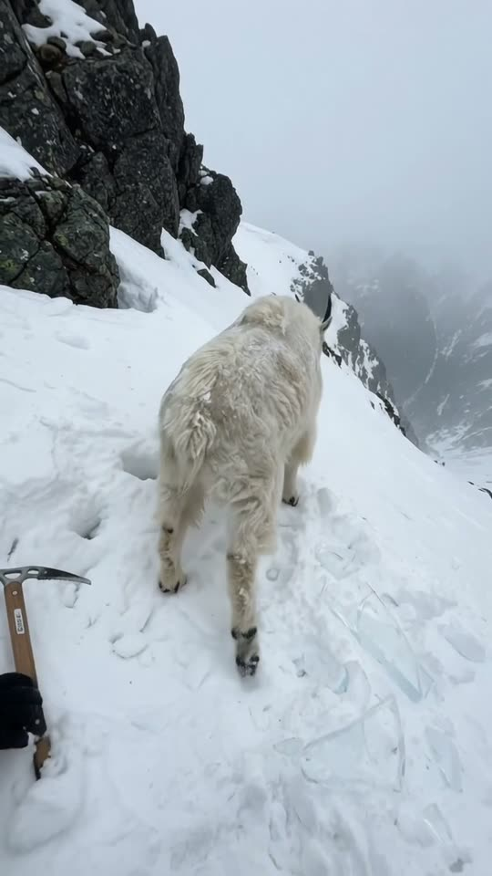

Free prompt pack
One axe.One frozen goat.
High on a steep snow slope, a mountain goat lies under a shell of clear ice. Tap, tap, tap with the pick of an ice axe, the shell cracks and comes off in curved sheets, and the goat shakes itself and climbs away. One still image and one prompt, in one take.
Both prompts, in the order I ran them. Tap the ledges to get the goat to the top of each one. Tap the slope for a puff of snow.
The first frame
Crouched close, the pick on the ice. This image is frame one: crouched 1.5 m from a mountain goat lying in the snow, a shell of clear ice over its back, and a gloved hand bringing the pick of an ice axe to the ice.
Watch out
Call the ice a shell that hugs the body like a glass coating. Write a block of ice and you get a glass display case with the goat standing inside it.

The prompt 149 words
Real handheld photo taken crouched in the snow 1.5 m from a mountain goat on a steep, overcast mountainside; the slope drops away steeply to the right and dark jagged rocks fill the top-left corner. The real mountain goat lies in the middle of the picture, legs folded under it, belly sunk in the snow, head raised to the right: shaggy white coat, short black curved horns, a beard. A smooth rounded shell of clear, glossy ice about five centimetres thick hugs its back, shoulders and sides like a glass coating, frozen to the snow, with trapped bubbles and a few white cracks; its head and horns stay free. From the left edge come a grey and white camouflage sleeve and a black-gloved hand gripping a wooden-handled ice axe near its steel head, the pick touching the ice on the goat's shoulder. Flat cold daylight, natural colour, real detail.
Tap, crack, climb
Ten seconds, crouched in the snow. Add the image as the reference, set 10 s, 9:16, 720p and audio on, and paste the prompt whole.
- 0–3.0 stap, tap, tap
- 3.0–4.5 sthe shell splits
- 4.5–6.5 sthe goat stands up
- 6.5–10 sup the slope
Watch out
Say the ice is already there and never grows, and that it breaks into rigid curved slabs. Otherwise it pops into existence mid-shot or flutters off like plastic film.
Fragments



The prompt 1027 words
FORMAT Real handheld video on a mountainside, seen as the finished exported video file: the full picture edge to edge, nothing on top of it. Whatever records the picture is never in frame. One continuous take in real time, no cuts. Vertical frame. The video runs at 24 fps. No frame is repeated. Real time, 1x speed, never slow motion. SCENE On a steep snowy mountainside, a mountain goat lies stuck in the snow with a shell of clear ice frozen over its back. A climber's gloved hand taps the ice with the pick of an ice axe until it cracks and comes off in curved clear slabs; the goat shakes itself, stands up and scrambles away up the steep slope toward the rocks. The tapping is already under way in the first frame. The take ends on the goat climbing the slope, small against the rocks. REFERENCE IMAGE Use it for the goat, the ice, the climber's sleeve, glove and ice axe, the slope, the rocks and the light. Everything matches it exactly, zero drift, no smoothing. The movement is described below. THE GOAT One real adult mountain goat lying in the snow with its legs folded under it, belly sunk in the snow, head raised: shaggy white coat, yellowish where it is wet, short black curved horns, a beard, dark eyes, black hooves. The same goat from the first frame to the last. THE ICE From the first frame a smooth, rounded shell of clear, glossy ice about five centimetres thick hugs the goat's back, shoulders and sides like a glass coating, frozen to the snow around it, with trapped bubbles and a few white cracks; its neck, head and horns are free. It follows the curve of the goat's body: no flat faces, no sharp corners, never a box or a block. The ice is already there: it never appears, never grows, never thickens; it only cracks and comes off. It is hard, heavy and brittle: it never bends, never flutters like plastic film, never melts; it breaks into thick, clear, rigid curved slabs that keep the shape of the goat's back. THE CLIMBER Only part of him is ever in frame: his sleeve in grey and white camouflage, his black glove and the ice axe, coming in from the left edge; at most the edge of his hood. He holds the axe like a small hammer, gripping the wooden handle near its steel head, and taps with the point of the pick. His face never comes into frame. LOCATION MAP We are crouched in the snow 1.5 m from the goat, at its height, on a slope that drops steeply to the right. The goat lies in the middle of the frame; the climber kneels just out of frame on the left, his arm reaching in. Behind and above the goat the slope rises steeply to dark jagged rocks in the top-left corner, 15 m away. FIRST FRAME The goat lying in its ice shell at x 20-80%, y 38-70%, head raised to the right; the climber's sleeve, glove and ice axe coming in from the left edge at x 0-35%, y 35-60%, the pick touching the ice on the goat's shoulder; snow filling the bottom; the steep slope rising behind, dark rocks in the top-left corner, the slope line tilting down to the right; grey sky in the top-right corner. Instant read: someone freeing a goat frozen in ice on a mountain. No delayed reveal. CAMERA Handheld, crouched close, the natural small movements of someone balancing on a steep slope. From 6.5 s it tilts up 20 degrees to follow the goat up the slope. It never cuts, never zooms, never pulls back to show the climber, never goes to a wide shot. ACTION TIMING 0–3.0 s — The glove taps the ice with the steel pick, short careful strokes along the goat's back and shoulder, tock, tock, tock; white cracks spread through the clear shell with each tap; the goat stays still, breathing, watching. 3.0–4.5 s — One more tap and the shell splits: thick, clear, curved slabs break off its back and side and slide down onto the snow, shattering into chunks, uncovering wet white fur. 4.5–6.5 s — The goat shakes its head and shoulders, flinging off ice chips, plants its front hooves and pushes itself up onto its legs; the last curved slab slides off its side. 6.5–10 s — It turns uphill and scrambles up the steep snow with sure, quick hops, hooves kicking up snow, away from us toward the dark rocks; the glove and the axe rest on the snow at the left edge. Hold as it climbs. PHYSICS AND SCALE Real weight: the goat is about 1 m long and heavy; the ice slabs are thick and heavy and slide downhill when they fall. Each tap chips off small pieces and leaves a white mark. Each hop lands hard, snow spraying from its hooves. One goat, one climber's arm, one shell of ice. Nothing morphs. NO FULL-FRAME EVENTS Nothing ever fills the frame: the dark rocks, the goat and the climber's dark glove stay visible against the snow in every frame. LIGHTING Flat cold overcast daylight, soft shadows; the ice glassy and clear, catching the grey sky. AUDIO No music, no score, no narration, no subtitles. Wind on the mountain; the sharp tock of steel on ice with each tap; ice cracking and slabs thudding and sliding on the snow; the goat's short bleat at 5.0 s; hooves crunching up the slope; the climber's heavy breath. No words. LOOK Real handheld footage, seen as the finished exported file: natural colour, flat cold contrast, light compression, no film grain, no lens flare, no slow motion, never CGI. No camera app interface: no shutter button, no gallery thumbnail, no record button, no icons, no timer, no recording dot, no frame lines. POSITIVE LOCKS One goat, one shell of ice, the climber only as an arm and a glove. No captions, no subtitles, no on-screen text, no watermark, no logos, nothing on top of the picture. ONE GOAT. ONE SHELL. NO CUTS. NO SLOW MOTION. NO MUSIC.
Rule 01
Shell, not block
The shape of the ice comes from the word. Shell plus glass coating hugs the body; block builds a display case.
Rule 02
Show only the arm
The rescuer is a sleeve, a glove and an ice axe coming in from the edge. The goat stays the star and no face trips a filter.
Rule 03
Trim the first frames
Image-to-video often holds the still for two or three frames and then jumps. Cut the first 0.2 s before you post.
That's the whole build
Now go freeyour own goat.
If yours works, send it over. I read every DM and the good ones end up on the account.
@martiiifons